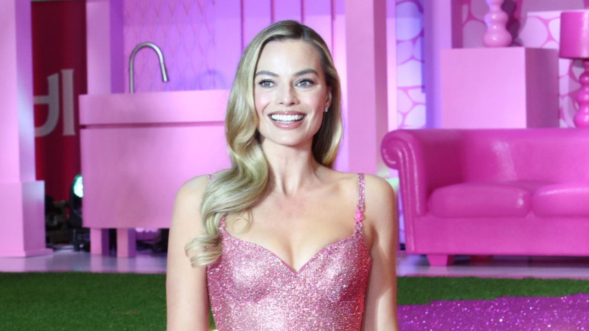

Segredos do universo Barbie
Dos primeiros desenhos até os cinemas, a Barbie construiu uma história cheia de magia e momentos marcantes.
Dos primeiros desenhos até os cinemas, a Barbie construiu uma história cheia de magia e momentos marcantes.
